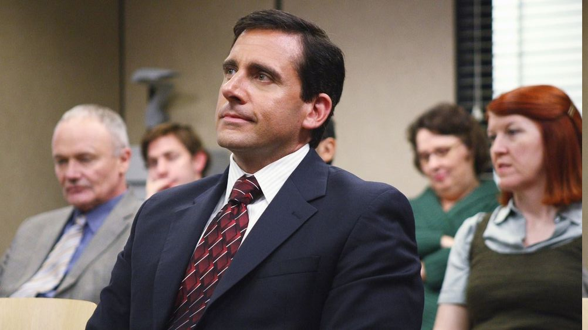

A transformação de um professor de química de meia-idade num
poderoso traficante de droga enquanto enfrenta as consequências
das suas escolhas num mundo perigoso e implacável.
Criador: Vince Gillian
Data de lançamento: 20 de janeiro de 2008
Elenco: Bryan Cranston • Aaron Paul • Anna Gunn
• Rj Mitte • Dean Norris
AVALIAÇÃO IMDb
9.5/10
ONDE ASSISTIR?
PORQUE GOSTO DESTA SÉRIE?
Breaking Bad apresenta personagens com nuances e profundidade que
evoluem ao longo do enredo e são capazes de surpreender o
espectador. A série tem uma história cativante, cheia de
reviravoltas e situações inesperadas. Para além disso, são
abordadas questões importantes como moralidade, justiça,
responsabilidade e as consequências das escolhas. Esses temas são
relevantes não apenas para a história da série, mas também para a
vida real, o que torna a série mais impactante e significativa.
Esta série conta ainda com uma produção impecável, com uma
fotografia impressionante, banda sonora marcante e um guião bem
construído. Tudo isto contribui para uma experiência única para o
espectador.
EPISÓDIO FAVORITO
O meu episodio favorito é o "Felina", o episódio final de Breaking
Bad que é uma conclusão emocionante para a série. Neste episódio
são fechados vários assuntos pendentes e é oferecido um desfecho
coerente e satisfatório para a história de Walter White, sem que
tenham ficado pontas. Tudo terminou como devia, afastando-se de
quaisquer clichês na minha opinião.
PERSONAGEM FAVORITO
É dificl distinguir apenas uma personagem numa série em que várias
personagens têm caracteristicas que as tornam incríveis. Ainda
assim, acho legítimo destacar o Walter White como o meu personagem
favorito. Walter White começa como um personagem comum e
inofensivo, mas ao longo da série evolui para se tornar um dos
maiores produtores de droga do mundo. Esta transformação é
fascinante de se assistir. Trata-se de um personagem complexo, que
tem motivações conflitantes e lida com várias questões
psicológicas ao longo da história. Ele é um homem de família que
se preocupa com o bem-estar dos seus entes queridos, mas também é
ambicioso e narcisista. Apesar das suas falhas e decisões
questionáveis, Walter White é um personagem humano e complexo, o
que faz com que seja fácil de me relacionar e gostar dele.
VER A SEGUIR
Better Call Saul
A história de origem do advogado astuto e carismático Saul Goodman
antes dos eventos de "Breaking Bad".

The Office
O cotidiano de um grupo de funcionários de uma empresa de papel na
Pensilvânia, apresentando situações cômicas e personagens
excêntricos.